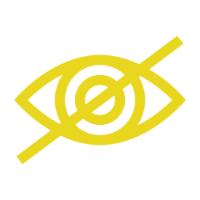
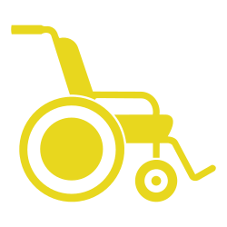
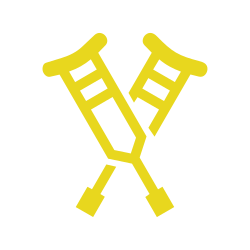

LA DISTANCIA ES LA MISMA
La experiencia no
Está página tiene experiencias audivisuales y kinestésicas, por favor sube el volumen y permanece atento a las instrucciones



Arrastra a la persona siguiendo la línea
Sigue la línea hasta el final sin salirte.
Arrastra la figura hasta el siguiente escalón
Escalón 1 de 5
Las barreras están en el diseño de la ciudad.